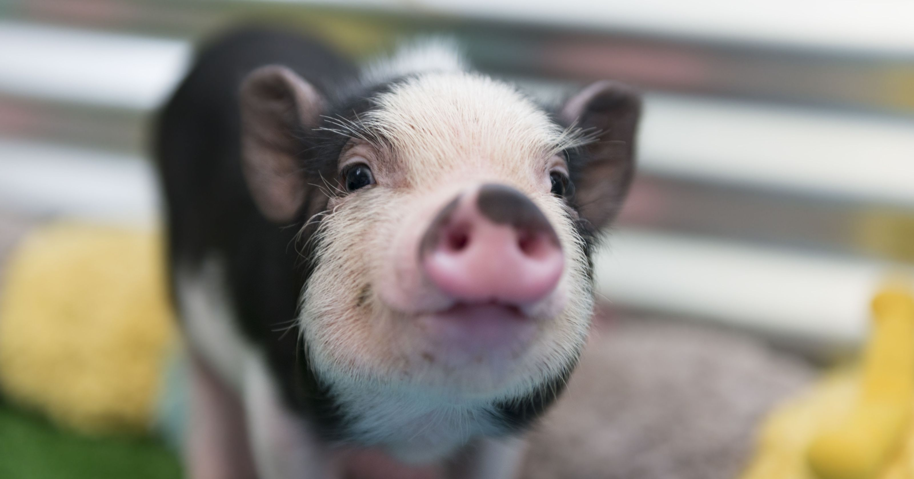

Description
A typical pig has a large head with a long snout that is strengthened by a special prenasal bone and by a disk of cartilage at the tip.[8] The snout is used to dig into the soil to find food and is a very acute sense organ. There are four hoofed toes on each foot, with the two larger central toes bearing most of the weight, but the outer two also being used in soft ground.[9]The dental formula of adult pigs is 3.1.4.33.1.4.3, giving a total of 44 teeth. The rear teeth are adapted for crushing. In the male, the canine teeth form tusks, which grow continuously and are sharpened by constantly being ground against each other.[8]
Social Behavior of Swine
Pigs are social animals that under free-ranging conditions live in groups of approximately eight individuals. The groups typically consist of three sows and their offspring. Boars are solitary.
Are pigs smart?
Pigs are highly intelligent, curious animals who engage in complex tasks and form elaborate, cooperative social groups. Their uncanny physiological and behavioral similarities to humans have given pigs a mysterious and often mythical quality that lends itself to folklore and fables.
What do pigs eat?
Pigs are omnivores, which means that they consume both plants and animals. In the wild, they are foraging animals, primarily eating leaves, roots, fruits, and flowers, in addition to some insects and fish. As livestock, pigs are fed mostly corn and soybean meal with a mixture of vitamins and minerals added to the diet.
Food for thought
"Well-being and happiness never appeared to me as an absolute aim. I am even inclined to compare such moral aims to the ambitions of a pig."
Oink, Oink!
Are pigs smart?
Of course you silly!
What do pigs eat?
Everything you eat, except bacon. They have morals.
Are all pigs pink?
Only the cute ones.